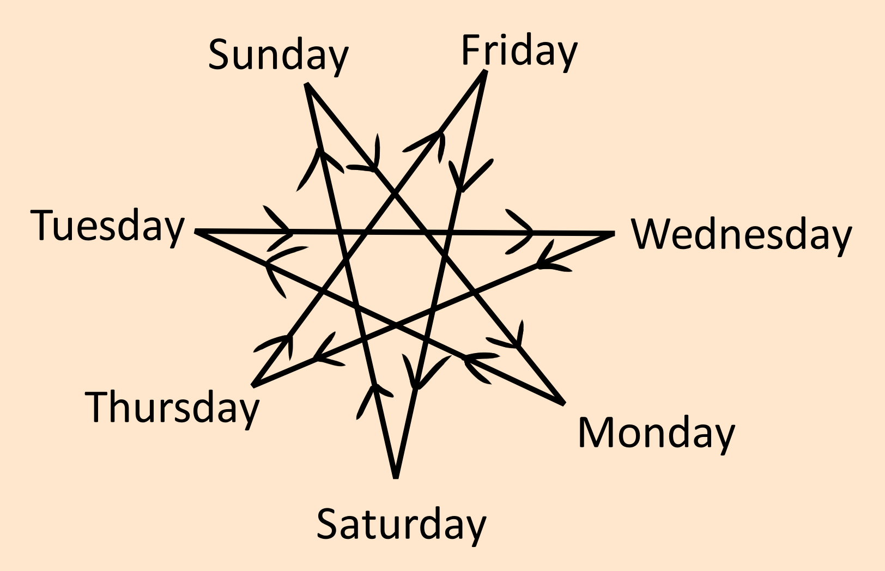

The easiest example for 7 is the days of the week.
Geometry
Here is a new style, the flow in geometry.
Correspondences
| Sunday | Monday | Tuesday | Wednesday | Thursday | Friday | Saturday |
|---|---|---|---|---|---|---|
| Sol | Luna | Mars | Mercury | Jupiter | Venus | Saturn |
| Gold | Silver | Iron | Mercury | Tin | Copper | Lead |
| Circulatory | Lymphatic | Muscular | Nervous | Digestive | Genitals | Excretory |
| Merchant | Caretaker | Warrior | Schollar | Governer | Artist | Farmer |
| White | Purple | Red | Silver | Blue | Green | Black |